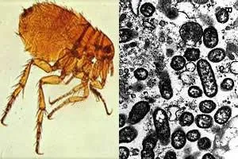
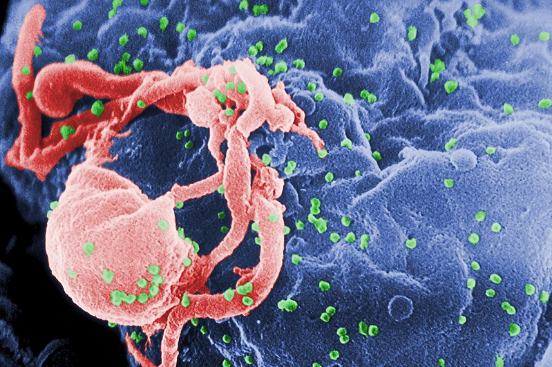
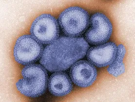
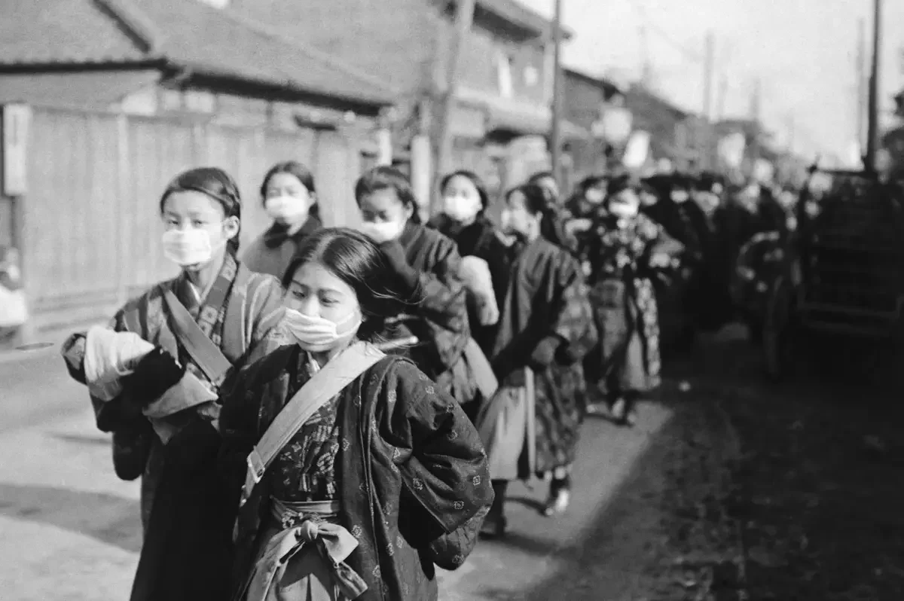
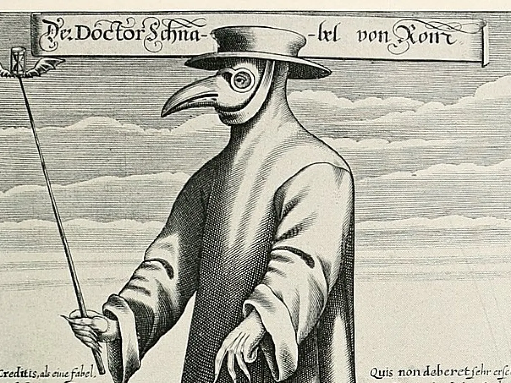

Covid-19
Infecção respiratória causada pelo coronavírus SARS-CoV 2, descoberta na China em 2019 e espalhada mundialmente.
- Sintomas: Febre, tosse persistente, dor de garganta, perda do olfato ou paladar, dificuldade para respirar.
- Diagnóstico: Swab de nasofaringe, amostra de sangue.
- Prevenção: Vacinação, uso de máscara facial, lavagem frequente das mãos, restrição do toque nos olhos, nariz e boca.
- Tratamento: Repouso em casa, medicamentos, oxigenoterapia.
Varíola do Macaco (Mpox)
Doença infecciosa e zoonótica (transmissível do animal para o homem), descoberta na África em 1970.
- Sintomas: Bolhas com pus por toda a pele, febre, dores musculares, fadiga, aumento do volume dos gânglios linfáticos.
- Diagnóstico: Teste imunoenzimático ELISA, isolamento do vírus em uma cultura de células infectadas, teste de detecção do antígeno.
- Prevenção: Lavagem das mãos e roupas, principalmente após o contato com pessoas possivelmente infectadas.
- Tratamento: Não há necessidade, os sintomas costumam desaparecer sozinhos em 2 a 3 semanas. É recomendada a atenção médica para aliviar os sintomas e evitar complicações futuras.
Tifo
Doença causada pela bactéria Rickettsia Prowazekii.
- Sintomas: Febre alta e prolongada, cansaço excessivo, dor de cabeça intensa, manchas e erupções cutâneas, náusea e vômito, dor abdominal, dor nas articulações, tosse e dor nas costas.
- Diagnóstico: Coprocultura
- Prevenção: Lavar as mãos com frequência e, em situações de risco, utilizar água mineral para ingestão e higiene oral; não tomar banho/nadar em rios, lagos, piscinas com água contaminada; evitar praias poluídas.
- Tratamento: Doxiciclina (um tipo de antibiótico chamado tetraciclina), administrado por via oral.

Ebola
Conhecida anteriormente como Febre Hemorrágica Ebola, é uma doença grave, muitas vezes fatal que afeta os seres humanos e os primatas não-humanos, como macacos, gorilas e chimpanzés.
- Sintomas: Febre, cefaléia, fraqueza, diarreia, vômitos, dor abdominal, inapetência, odinofagia, manifestações hemorrágicas.
- Diagnóstico: O exame a ser realizado é o de PCR para o diagnóstico confirmatório de Ebola.
- Prevenção: Evitar contato com o sangue ou secreções de animais ou pessoas doentes, ou com o corpo de pessoas falecidas em decorrência dessa doença, durante rituais de velório.
- Tratamento: Evitar que a doença evolua, por meio de cuidados paliativos que envolvem manter o paciente hidratado e afastado do contato com outros indivíduos.
HIV
Também conhecida como AIDS, é causada por um lentivírus que promove a deterioração progressiva do sistema imunológico, podendo ser transmitida sexualmente ou por transfusão sanguínea.
- Sintomas: Febre, diarreia, suores noturnos, mal-estar, gânglios pelo corpo.
- Diagnóstico: Coleta de sangue ou fluido oral.
- Prevenção: Uso de preservativo, não compartilhamento de alicates e seringas.
- Tratamento: Não há cura, mas o controle do vírus é feito por meio de medicamentos antirretrovirais.

Gripe Espanhola
Pandemia causada pelo vírus influenza que matou cerca de 50 milhões de pessoas entre 1918 a 1920, estando atualmente erradicada.
- Sintomas: Febre repentina, dor corporal intenão sa, inflamaçdos órgãos respiratórios, calafrios.
- Diagnóstico: Métodos precários, como o exame físico e a análise dos sintomas.
- Prevenção: Isolamento social, quarentenas, uso de máscaras, higiene pessoal.
- Tratamento: Não havia, mas era aconselhado o repouso e alimentação adequada.
Gripe Suína
Doença infecciosa respiratória aguda, causada pelo vírus Influenza (H1N1).
- Sintomas: Coriza, constipação nasal, cefaleia, dores locais, diarreia, náusea, vômitos, dor de cabeça e garganta.
- Diagnóstico: Exames de sangue e teste de RT-PCR.
- Prevenção: Alimentar-se bem e beber bastante água; não compartilhar utensílios de uso pessoal, como toalhas, copos, talheres e travesseiros; caso haja indicação, utilizar uma máscara para proteger-se.
- Tratamento: Repouso, analgésicos e ingestão de líquidos.

SARS-CoV-1
Também conhecida como síndrome respiratória aguda grave, é o primeiro tipo de coronavírus atualmente patogênico e foi identificada pela primeira vez em 2003.
- Sintomas: Febre alta, tosse seca, fadiga, dificuldade para respirar.
- Diagnóstico: Exame clínico, testes de PCR, sorologia.
- Prevenção: Isolamento social, uso de máscaras, higienização das mãos.
- Tratamento: Repouso, ventilação mecânica, antivirais.
Peste de Atenas
Epidemia que atingiu a cidade de Atenas entre 430 a.C e 427 a.C, causando a morte de aproximadamente um terço da população local.
- Sintomas: Febre, vermelhidão nos olhos, sangramento na garganta, úlceras, perda de voz, vômitos.
- Diagnóstico: Análise dos sintomas.
- Prevenção: Isolamento social, fuga da cidade.
- Tratamento: Cuidados paliativos, remédios à base de ervas, banhos e compressas.
Gripe Hong Kong
Terceira pandemia de gripe do século XX (H3N2), surgida em Hong Kong, em 1968.
- Sintomas: Febre alta, tosse persistente, dor de garganta, fraqueza, calafrios.
- Diagnóstico: Teste de imunofluorescência, sorologia, cultura viral.
- Prevenção: Vacinação, higiene adequada, fortalecimento do sistema imunológico.
- Tratamento: Repouso, analgésicos para o alívio dos sintomas.

Tuberculose
Doença infecciosa que afeta prioritariamente os pulmões, embora possa acometer outros órgãos e/ou sistemas, causada pelo Mycobacterium Tuberculosis ou Bacilo de Koch.
- Sintomas: Não costuma apresentar sintomas. Quando ocorrem, geralmente incluem tosse (às vezes, com sangue), perda de peso, sudorese noturna e febre.
- Diagnóstico: Exame microscópico direto (baciloscopia direta), cultura para micobactéria com identificação de espécie, teste de sensibilidade antimicrobiana, teste rápido para tuberculose (TR-TB) e radiografia de tórax.
- Prevenção: Manter ambientes bem ventilados e com entrada de luz solar, proteger a boca com o antebraço ou com um lenço ao tossir e espirrar (higiene da tosse), evitar aglomerações.
- Tratamento: Nem sempre é necessário para pacientes assintomáticos, mas os que apresentam sintomas precisam de um longo tratamento com vários antibióticos.
Peste Negra
Também conhecida como Peste Bubônica, é causada pela bactéria Yersinia Pestis e pode se disseminar pelo contato com pulgas infectadas.
- Sintomas: Inchaço dos gânglios linfáticos, que podem ficar grandes como ovos de galinha, na virilha, na axila ou no pescoço; febre, calafrios, dor de cabeça, fadiga e dores musculares.
- Diagnóstico: Feito mediante o isolamento e a identificação da bactéria Y. Pestis em amostras de aspirado de bubão, escarro e sangue.
- Prevenção: Evitar contato com roedores silvestres, os quais podem conter pulgas.
- Tratamento: Atendimento hospitalar urgente e uso de antibióticos fortes.
